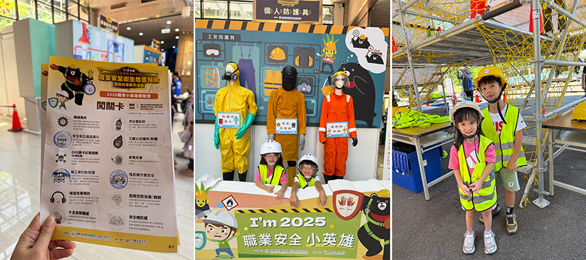
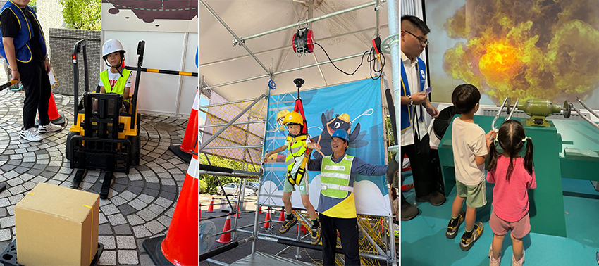
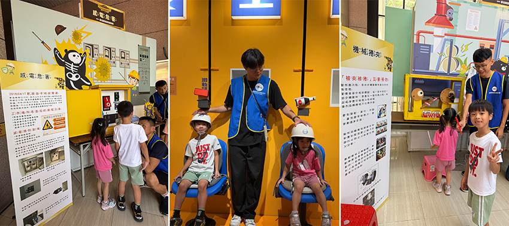

前陣子我帶著孩子一起參加了由勞動部勞動及職業安全衛生研究所舉辦的「2025勞安加衛小尖兵體驗營」。平常我們大人上班常提到「職業安全」，但對孩子來說，這四個字多少有些抽象，這次的活動讓小朋友透過遊戲和互動親身體驗，既新鮮又難得，也藉此讓孩子從小建立起正確的安全意識。
一到現場，館內佈置得充滿科技感，孩子覺得彷彿來到遊樂園一般。我們先在服務台報到，並領取闖關地圖，這張地圖就像是一張藏寶圖，指引我們去發掘生活與未來工作環境中潛在的職業危害。正式闖關前，孩子就已對那些展示的職安主題器具產生了濃厚的興趣。館方的工作人員相當親切，透過簡單介紹，讓孩子初步認識到日常生活中潛藏的風險，例如：原來每天聽到的噪音，長期下來也是一種危害。
|  |
現場有好多有趣的體驗，每個關卡都設計得極富巧思，讓孩子們在遊戲中學習，並深刻感受危險的真實性。
[個人防護具體驗]
孩子穿上安全背心、戴上護目鏡和安全帽，透過講解才發現，原來每一樣都有它的功能，也更懂得防護具的重要性。
[堆高機作業安全體驗]
這一區是孩子最興奮的部分！現場特別準備了迷你堆高機，讓小朋友親自體驗駕駛。在專業人員的指導下，孩子雙手緊握方向盤，小心翼翼地前進、後退，臉上滿是專注的神情。透過親身體驗，他不僅玩得開心，也更明白「安全操作」的重要。
[施工架行走和高空墜落]
孩子們體驗高架作業的驚險，讓他們對高空作業人員的辛苦與危險產生了真實的體會。
[噪音危害預防]
透過分貝測試與耳罩體驗，孩子親身感受到大聲環境對聽力的影響。從中學會保護耳朵的重要性，也知道長期暴露在噪音中會對身體造成傷害。
[工廠火災爆炸／粉塵體驗]
透過粉塵爆炸的模擬展示，瞬間的火光和爆炸聲讓人驚呼！孩子學到引發火災與爆炸的危險物質有哪些，也懂得要遠離潛在危險源。
[認識各種有毒標誌]
透過互動遊戲與圖片展示，孩子學會辨識常見的危害標誌，增進了自我保護的意識。
[感電危害]
這個體驗教導孩子如何正確使用插座，以及發生觸電時應該怎麼辦。孩子從中學會「電雖看不見，卻非常危險」，這堂課非常實用。
[下水道局限空間體驗]
一走進去，映入眼簾的是昏暗狹窄的模擬場景，地上還放了許多蟑螂造型的娃娃，讓孩子瞬間緊張起來。這次體驗讓他了解到，許多工人每天都在這樣艱辛且充滿危險的環境中工作。
[不良姿勢體感]
透過感測裝置，系統會即時回饋彎腰提重物的錯誤姿勢。教導小朋友如何正確搬運重物，以保護脊椎健康。
[安全帽防護體驗]
孩子戴上安全帽，參加模擬物體掉落的實驗。看到安全帽承受撞擊後仍能保護頭部，他驚呼「好厲害！」，這個體驗簡單，卻極具震撼力，也讓小朋友懂得安全帽不只是裝飾，而是真正救命的防護裝備。
[機械捲夾體驗]
這裡透過模擬機械運作的平台，展示了傳統機械操作時可能帶來的風險。孩子了解到，雖然機械讓工作更方便，但若沒有遵守操作規範，就可能造成危險。
|  |
整個活動下來，大概花了兩個多小時，但孩子完全不覺得無聊，每一關都充滿新鮮感。對我而言，最有價值的是這些「潛在危險」能以小朋友聽得懂、玩得開心的方式呈現，讓孩子留下深刻印象。尤其是現代小孩多半生活在舒適環境中，很少接觸「危險工作」的情境，透過這樣的活動，不僅增廣見聞，也能讓他們更珍惜父母和社會上所有勞工的付出。這次活動完全免費，內容多元又有深度，場次不定期開放，可以關注粉專「工安防護熊厲害」。真的很值得推薦給大家，是一場寓教於樂的學習體驗。
|  |